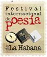

Review of the Havana International Festival of poetry of

Content:
- Origin and essence
- Auspices
- Network of poets in defense of humanity
- Network “Our America” Poetry International Festival
- World Federation of festivals of poetry
- Word in the world
- The water Board
- Itinerant Cubapoesía
- Southern collection
- Award “Rafael Alberti”
- Lab international of writings(LABIES)
- Centenary of José Lezama Lima
- Defense against nuclear war
- Those who make the Havana International Festival of poetry of
I. Origin and essence
The Havana International Festival of poetry of arose in 1996 under the auspices of the Instituto Cubano del Libro, the Office of the city historian, the Union of writers and artists of Cuba and South Cultural project, in whose own Latin American screening the annual event of Cuba has had much influence. The Festival of poetry acquired a network in 60 cities in Latin America, United States and Europe, and currently boasts a group of international support that allowed the realization of 800 Read more of 400 cities around the world in May of 2010.
A small group of important poets prestige and give ideas and suggestions to the Festival. A team of coordinators is occupied in the preparation of the event, the relationship with the institutional related Cuban and the poets of the network. Also a large group of volunteers maintain its programme of activities.
Six provincial capitals: Pinar del Rio, Cienfuegos, Sancti Spiritus, Ciego de Ávila, Artemis and San Jose, they are the headquarters of the Festival; to which are added others 160 cities and towns that organize readings during the days of the Festival.
Difficult to hold an event that aims to bring poetry and poets to scenarios that transcend the common spaces and re-establish contact with the common man, in the economic conditions in Cuba. In spite of this Festival is installed as a possibility to operate both at the community level, as in privileging the relationship of the poets with their readers and the creation of forums that meet the interests of creators from all parts of the world for whom Cuba is reference of utopia.
The Festival of poetry of Havana is an ideal not only for the pursuit of a public, the promotion of poetry and of the poets citizen action, but to jump-start participation strategies, articulate closer relations with foreign similar associations, structuring promotional dynamics in a context that can not ignore importance of communication and Exchange, the usefulness of the cultivation of feelings, values humanists and the exercise of critical thinking in a world in which are indispensable weapons of the trial to transform it, as said José Martí, the largest of the Cuban people, due to other.
II. Auspices
Is the support of various institutions during the years of work the Festival of poetry: the Junta de Andalucía, Charity Andalusian society, the Cultural ALBA, PDVSA Cuba, the Goethe-Institut, the Exchange Center / Community reference (CIERIC), the Spanish Agency for international cooperation and development, the Pablo Neruda Foundation, the Centro Andaluz de las Letras, the Excma. Diputación de Málaga, the Excma. Diputación de Córdoba, the General Directorate of libraries and archives of the Ministry of culture of Spain, the embassies of Egypt, Angola, Hungary, Ecuador, the Russian Federation, Chile and Poland, as well as the substantial support of the National Council of the performing arts, the project 23, the Cuban Institute of art and cinematographic industry of Cuba, as well as the contribution of the UNEAC to cover the costs of the Festival in the national currency, the amount is offset almost in its entirety by revenues from the southern collection.
III.Network of poets in defense of humanity
A significant part of the Poetry Festival is the creation and maintenance of the network of poets in defense of humanity, It interrelates to more than 4,000 poets, and that has proven effective not only in his political statements on the great issues of our time, but especially in the defence of Cuba and its struggles in the international arena. The Board of Directors formed poets from five continents. An example of concrete action was the response of more than thirty thousand poets from around the world that adhered to the Declaration of the Festival of Havana in may, unthinkable achievement without the vital cooperation of the Poetry Festival of Medellín, in particular, its main organizer Fernando Rendón, the Ministry of culture of Cuba and UNEAC.
IV. "Our America" of international poetry festivals network
Another major issue has been the effort to create the network "Our America" of poetry festivals in Latin America and the Caribbean. Several preparatory meetings in Caracas and Havana during the past four years led to the proclamation of the network, the most important achievement of Poetry Festival.
They have an idea of its potential think that they exist in the Latin American region 38 poetry festivals so far had been operated separately and with the network "Our America" could arrange actions to add to the poets in the spirit of the changes that roam the continent.
V. World Federation of festivals of poetry
The Festival of poetry of Havana and the Poetry Festival of Medellín convened the second meeting of the network in the Colombian city, in order to adjust for the next period continental action plan and prepare the call for the creation of the World Federation of poetry festivals in July of 2011. There are in the world 120 poetry festivals, a huge potential for the action of the poets.
VI. Word in the world
An activity that requires a lot of dedication is word in the world, a planetary poetic action that, convened over the internet by the Festival, South Cultural project and the Black island of Italy magazine, It calls for readings in all parts of the world in support of the Festival of poetry of Havana. That effort lasts five years ago and in May of 2010 incorporated to 400 cities in five continents that were 800 readings. The list of cities, places of reading and participating poets are recorded in web pages, blog and digital magazines from around the world.
Cuba corresponds to that gesture with a simultaneous reading in 165 cities and towns, joint action of the Union of writers and artists of Cuba, the Cuban book Institute, "Brothers Saíz" of young artists and Writers Association, the provincial centres of the book and literature and the National Council of houses of culture.
VII. The water Board
From 2003 is performed, in the context of the Festival, a forum dedicated to the preservation of nature, the fight against drought and desertification, and the defense of aquifers. In 2010 It operated on the Las Terrazas community, Biosphere reserve, in the Sierra del Rosario, to the West of Cuba. For a year the most prominent of Cuba took contact with residents of the community, interacting with their customs, their traditions, their culture. As a result appears the possibility of a job in the medium and long term taste education, the habit of reading and appreciation (and creation) literary.
VIII. Itinerant Cubapoesía
The project involves a systematic intervention on the literary promotion: the meeting of the poets with their potential readers in colleges, science centers, cultural centers and communities across the nation, through the Organization of readings on different dates of the year, as well as meetings of the poets of each locality with workers, students and other social sectors objects of cultural work.
IX. Southern collection
Another relevant aspect of the work is the southern collection, imprint of the Festival.
From 1993 have been published 130 titles, generated essentially to promote the circulation of works and authors linked to the topics, geographic areas or literature to which the event is dedicated. With only quote the names of Pablo Neruda, Anna Akhmatova, Agostinho Neto, Wyzlawa Szymborska, Leopold Sedar Senghor, Jacques Roumain, Eduardo Galeano, Yevgeny Evtushenko, Roberto Fernández Retamar, Pablo Armando Fernández, Nancy Morejón or the German Expressionists, an idea of the South collection catalogue can be.
X. Award "Rafael Alberti
The award "Rafael Alberti", endowed with 1000 $, the international poetry Festival of Havana given it each year sponsored by the charity society of Andalusia, to the relevance of a poetic work in the field of the Castilian language. Among the distinguished poets are among other Cintio Vitier, Fine García Marruz, Luis Marré, Roberto Fernández Retamar, Carilda Oliver Labra, Pablo Armando Fernández, Luis Carbonell, César López, Nancy Morejón, Waldo Leyva and Fernando Rendón.
XI. Lab international of writings (LABIES)
The International Laboratory of Scriptures (LABIES) It is an educational and formative effort which for ten years has promoted the Festival of poetry. Courses on history, technique and experience of poetry have alternated with the Organization of conferences and seminars on great poets of our time. What joins the practice of literary workshops and the promotion of the work of the literary gatherings as dynamic for dissemination and training in reading and the literary taste.
XII. Centenary of José Lezama Lima
The Festival takes part in the work of the centenary of José Lezama Lima in 2010, with the publication of five titles: The book of interviews thus spoke Lezama, compilation of Ciro Bianchi Ross, The mystery that accompanies us, compilation of 50 Cuban poets, Lezama meals, a unique book that includes their favorite meals recipes, Visits to Lezama notebook, with the papers of the seminar on the great Cuban poet, held in the Museum of fine arts during the Festival and small roundabout for José Lezama Lima with texts of foreign poets dedicated to Lezama. Several of these titles will be printed for the southern collection by the Asia Foundation and the international poetry Festival of Medellín, of Colombia.
XIII. Defense against nuclear war
The International Festival of the poetry of Havana will be a defense against nuclear war, with relevant poets during the fair of the book of Havana, of the 10 to the 20 February's 2011.
XIV. Poetic medium-term actions
1. Simultaneous poetic action word in the world the 24 may of 2011.
2. Call for the international poetry Festival of 2012.
3. Tribute to Virgilio Piñera (1912-2012) and the large afroantillanos poets.
4. Publication of the book Cuba: culture and revolution on the occasion of the 50 years of Fidel's words to intellectuals and the half-century of UNEAC, to put in the hands of the poets who come to Cuba and the keys that mark our identity.
XV. Who does the Havana International Festival of poetry of
Presidency
Aitana Alberti, Pablo Armando Fernández, César López, Nancy Morejón, Eusebio Leal, Miguel Barnet,
Zuleica Romay, Carilda Oliver, Rogelio Martinez Fure, Waldo Leyva, Virgilio López Lemus,
Orlando Garcia, John, Ramón de la Portilla, Sixto E. Bonachea, ADA Cepeda Mirta, Omar Felipe Mauri,
Julio Sanchez Chang, Edel Morales, Jesus David Curbelo, Gerardo Alfonso
International support Committee
Thiago de Mello (Brazil), Marcelino Dos Santos (Mozambique), Zolani Mkiva (South Africa),
Juan Bañuelos (Mexico), Hildebrando Perez (Peru), Fernando Rerndon (Colombia),
Malak Sahioni (Syria), António Gonçalves (Angola), Elikura Chihuailaf (Chile),
Tito Alvarado (Canada), Samir Delgado (Canary Islands), Gabriel Impaglione (Italy)
Group Executive
Pierre Bernet, Karel Leyva, Sinecio Verdecia, Luis Lorente, Jesus David Curbelo, Emilio Comas,
Felix Contreras, José Luis Moreno, Marlene Alfonso, Betsy Red, Constantine Muinoz,
Carmen González, Teresa Hill, Jorge Luis Coloma, Juliet Chongo, Yeney Ramos,
Irma Brito, Lina Castro, Tania Hechavarria, Liliam Comas
General coordinator
Alex Pausides
XVI. Contacts
Email: cubapoesi a@cubarte.cult.cu
Web: www.cubapoesia.cult.cu
Blog: www.fplh.blogspot.com

Recent Comments